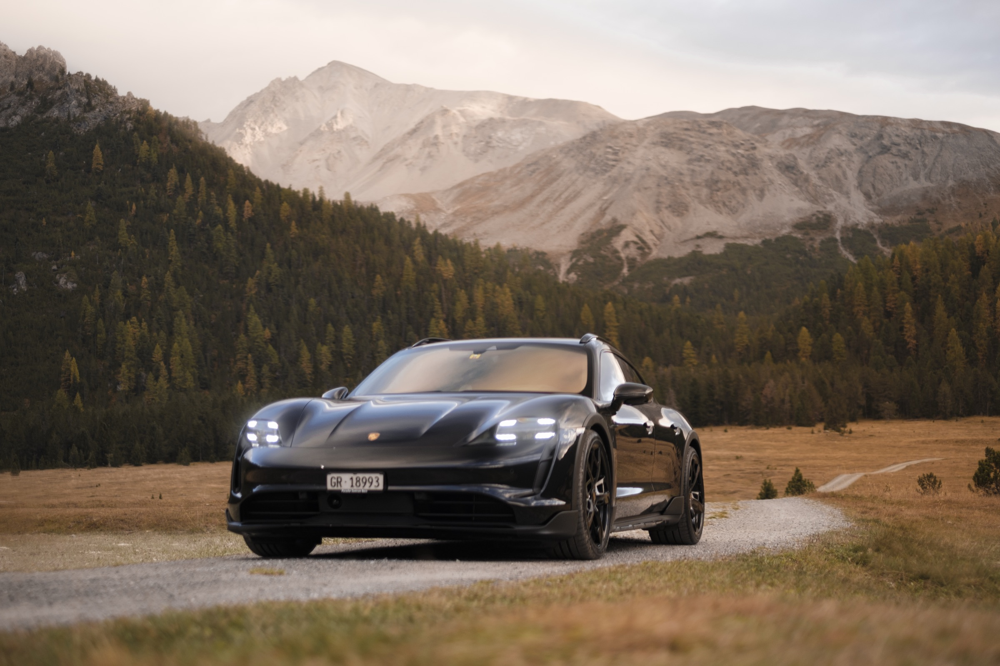

Pässefahrten in 3D · Graubünden
Die Route kennen, bevor der Motor läuft.
Julier, Albula und Flüela als Flug über echtes Gelände – mit den Fotohalten und der Uhrzeit, wann dort das Licht stimmt. So plane ich Shootings. Und so können Clubs, Rallyes und Händler ihre nächste Ausfahrt zeigen, bevor jemand den Schlüssel dreht.

Lädt Gelände und Luftbild direkt von swisstopo (je nach Pass 20–60 MB). Am besten im WLAN.
Fotohalte und Licht
Lichtzeiten jeweils am 15. des Monats, gerechnet mit dem Sonnenstand und den Bergen rundherum bis 150 km. Wolken kann ich leider nicht vorausrechnen. Passstrassen vor der Fahrt prüfen: Wintersperren und Bauarbeiten ändern sich.
Für Clubs, Rallyes und Händler
Eure Ausfahrt, zweimal erlebt.
Einmal vorher in 3D, zum Vorfreuen und Planen. Einmal am Tag selbst, mit der Kamera an der richtigen Kehre.
Routenfilm für die Einladung
Eure Strecke als kurzer 3D-Flug mit Logo, Halten und Höhenprofil. Passt in die Einladung, auf die Website und auf Social Media.
Fotohalte mit Lichtplanung
Ich suche die Kehren und Aussichtspunkte und rechne aus, wann dort das Licht stimmt. Daraus entsteht der Zeitplan für den Tag.
Fotos und Film am Tag selbst
Ich stehe dort, wo die Autos am besten aussehen. Danach gibt es für alle Teilnehmenden Bilder ihres eigenen Autos.
Auch für eigene Strecken ausserhalb dieser drei Pässe – einfach Start und Ziel schicken.